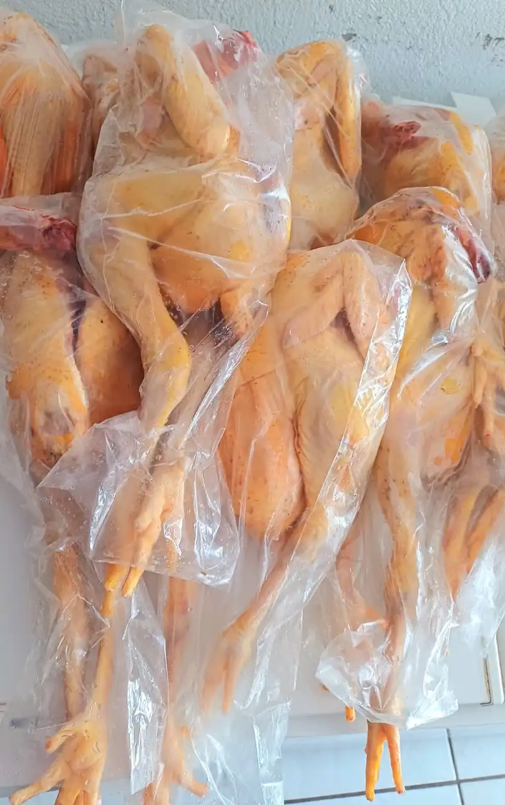
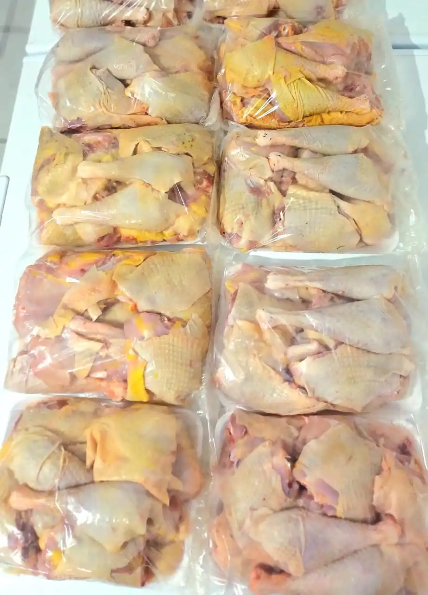

Frango Caipira e Semi-Caipira
Escolha o Tipo e Corte:
Retire na loja: R. Bom Jardim, 379 — Centro, Cáceres.
Frango Caipira: Criação Livre, Sabor que a Indústria Não Consegue Copiar
O frango caipira é criado solto, com espaço para correr, ciscar e se alimentar naturalmente de insetos, grãos e ração caseira sem antibióticos ou promotores de crescimento. Esse estilo de criação é o que transforma a carne: o exercício constante desenvolve as fibras musculares de forma mais equilibrada, resultando em uma textura firme, com sabor intenso e profundo que o frango de granja simplesmente não consegue oferecer. Quem cresceu comendo frango caipira sabe — é um sabor que não se esquece.
Trabalhamos com duas categorias: o frango caipira puro, criado exclusivamente em regime extensivo com ração natural por pelo menos 85 dias, e o semi-caipira, criado com acesso a piquetes ao ar livre por um período menor e alimentação complementada com ração balanceada. O semi-caipira tem carne um pouco mais macia que o caipira puro, com sabor igualmente superior ao convencional — uma ótima opção para quem quer qualidade com custo mais acessível.
Para uma galinhada perfeita com frango caipira, o segredo está na paciência: use o frango picado, refogue bem com alho, cebola, tomate e cheiro-verde, adicione o arroz ainda cru e cozinhe no próprio caldo do frango. A firmeza da carne caipira mantém os pedaços inteiros mesmo após o cozimento lento, liberando todo o colágeno e o sabor no arroz. O resultado é uma galinhada encorpada e aromática que remete ao domingo na roça.
O frango caipira também é excelente assado inteiro na brasa ou no forno com tempero de alho, limão e ervas. O frango semi-caipira inteiro é ideal para quem prefere um preparo mais rápido sem abrir mão do sabor diferenciado. Em ambos os casos, consulte a disponibilidade pelo WhatsApp — trabalhamos com encomendas para garantir que você receba sempre a carne mais fresca possível.